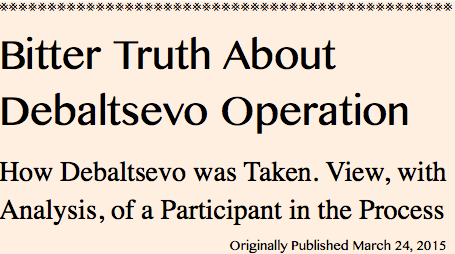
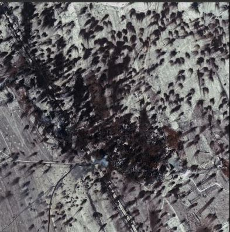

![20120724 - 7-24-2012 The More We Learn - quote from David Rockfeller -_thumb[2]](../../assets/images/20120724---7-24-2012-the.jpeg)




Translation by Kazzura Original text: http://kenigtiger.livejournal.com/1555422.html
“ I was there, in Sanzharovka and in Debaltsevo, I fought on the LPR side in “August” battalion. This text — isn’t a compilation of texts from entornets or stories of witnesses. I’ve seen everything that I’m writing about with my very own eyes”.
One more moment. Citizens, willing to explain me how much harm I’m causing the common cause with my story, what an Ukropian spy I am and such — may not bother themselves. I’m not revealing any military secrets and not telling anything that enemy doesn’t know yet. I invite those who will be telling me that I’m a scaremonger and “All-Is-Lost!”-er to join me in my next journey to Novorossia. We’ll see who’s who on the ground.
On the pretensions like “With your scribble you’’ scare the volunteers from RF off and they won’t to fight” I answer — if this truth scares them, it’s better not to go there, better work here and help the fighters on the frontline financially. Because for example a person comes, he’s taught, trained and then, when that, what’s described it this “scribble” starts he’ll desert. What would be the result? Long hours and days of time spent on commander to train the soldier would be wasted.
I write this text because I want us to win this war, and with minimal losses possible. I realized that such text is necessary when, upon arrival from Novorossia, witnessed a wave of victorious communiques from the combat zone on the internet, followed by completely inappropriate boasting moods. An apogee was the writer Martianov’s contest of artistic boasting, that, in the end, gave birth to such “wonderful collection of sophisticated mockery over Ukrops”[ed. I don’t have time, nor I want to, to translate that stuff — stupid humor written by guys who most likely even hadn’t been on war]
Also, two articles by Vlad Shurigin played their role - “Battle crisis” and “Victory”, where degree of boasting had been increasing vividly and graphically. From “command was forced to make nonstandard decisions of replenishment of the group that had been fighting around Debaltsevo with the reserves. So, additional companies were formed from the servicemen of the staffs and logistical structures in order to enforce the attacking group” in the first text, and to “NAF command hasn’t even used its reserves”, in the second one. (Yes, dear military historians, it’s not a typo. This, turns out, is a NONstandard decision. After such “discovery of America” we can await for “invention of the bicycle”! ). You’d better finally decide what is your official version, dear “comrades politruks” [ed. political officers in Red/Soviet army]. What happened there? Either it was a victorious march, that didn’t require any reserves, or a convulsing of sending everything possible from the rears to fill the holes in the frontlines. I was especially mad and persuaded in necessity of this text by the desire of author to show systematic mistakes in developement of NAF military as “single flaws” and blame privates and junior commanders for them. Classics of the genre, generations of soldiers pay with their lives for.
Epigraphs.
“Every lieutenant is a Napoleon, every corporal - Prince of Savoy, only there’s no one to fight. Baron! Connect me to Litovsky. Litovsky? Who’s that? Gubarevich? It’s me, Vasilchikov. Are your projectors on? Listen.. light the Sivash up, just in case. What? As I’ve told — just in case © “Two comrades served” [”Служили два товарища”] movie.
Inspection of the trophy objects of the invincible Ukrainian army has caused perplexity… Truth to speak, I sincerely used to think that there can’t be worse mess and irresponsibility [ed. it’s a different, swear word in original here, but it’s impossible to translate it to English], than the ones in our Armed forces. With all responsibility, I state: it can! If the state of all units is the same as in the inspected ones, then I don’t get it — why the heck stop at the Crimean Isthmuses. In automobile battalion, only 9 of 130 wheeled vehicles turned out to be operational ( and after the 50-km march, we had to tow 3 of them ).
Only commander’s UAZ and field kitchen were completely intact. According to certain info, to the north of Perekop and Chongar [ed. isthmuses] everything is in the exactly same state… including tanks and other armored vehicles.
However, everything is carefully painted - even the hopelessly broken and unrepairable things. There are lots of rarities from 60s and 70s of USSR - especially about the means of communication Afghan period hand radio stations taken out from the depot caused a tears of tenderness to flow … © Kotych [ed. Igor Strelkov’s nick on the ‘secret forum’, post was written in March ‘14, when in Crimea he inspected the former Ukrianian military units that joined RF]
“A miracle has happened, Mother! Fleet that would be worse then ours has been found!!” © credited to Alexei Orlov reporting Yekaterina II about victory at Çeşme.
Instead of a prologue, just for your understanding.
When on the entornets I read phrases like “NAF haven’t even used their reserves yet” about Debaltsevo, that roam from the compositions of one “politruk” to another one’s, I remember the night, tree belt along the railroad near Debalstevo and two BMP, one — our own “dvushka” [ed. BMP-2] the last operational BMP of the battalion at the moment and “kopeika” [ed. BMP-1] attached to our battalion from the nearest brigade. We got unloaded from the “Ural” trucks, what kinda told us — enemy arty is still working ahead. There was less than a company of us. About 30 dismounted tankers of our battalion plus 3 more dozens of volunteers that had just arrive from Luhansk recruitment office, who had been handed over their rifles right in front of me, less than 24 hours before the combat. Shooting training? Drills? Exercises? People who had raised their hand on the question “Who have served in army?” got assigned as platoon and team leaders. That’s it.
Senior commander who saw us off had shown us the direction to go, told the callsign of the commander of combat group we were meant to shift on the frontline and added: “ ‘Friendlies’ signal — a green flare. But I don’t have no flares, nor I have flare-gun for you”.
There wasn’t a single PKM for an entire band. Not a single underslung GL. “Mukhas” [ed. “Flies”, RPG-18] — as old as I am, only one of 3 has worked and couple of RPG-7, people were somehow taught to use them right en route. When, on the next day, after passing the “Ghost” [ed. brigade] positions, we approached ukrops, there were “200th” [ed. KIAs] of the same “consolidated company” as ours lying beside the enemy positions. Only they were “dismounted” artillerists. And they weren’t killed by scary Polish mercenaries and not by hellish American marines.They were killed by the UAF soldiers lead by the mobilized agronomist.
Tell me about the unused reserves.
Main bad and it’s consequences.
The main systematic problem of the military development of the NAF was, first of all, the fact that everything was done according to the worst templates of the Soviet army at its worst period, and the second - everything was done so, as if army was going to fight in a year. Better in two.
The nightmare of the “scary lieutenant” hasn’t materialized, but was close to.
So, first things first, someone sent militias stuff lists for the motorized riflemen brigades, that are formed in corps, as well as for other units of corps subordination. Like “take your places now, quick! Quick, enlist all “makhnovsty” [ed. from anarchist Nestor Makhno troops — disorganized gangs, nowadays the term is used to call poorly organized or simply not strictly subordinated units who tend to act on their own] with their kingpins, and recruit people where you lack them! The ones who isn’t agree will be deprived of “voentorg” [ed. supplies]. Mozgovoi refused, and in the end, turned out to be right.
Then someone decided that lots of “iron” [ed. armored vehicles, artillery] is cool. Especially it’s cool where there’re lots of artillery and tanks. An voentorg has cast its mighty magic [ed. term author uses for the “cast” in Russian is transliteration of English one — RPG/MMORGP slang term] and NAF got lots artillery and tanks. Really lots of. But somehow no one thought about the fact that without adjusted infrastructure of the closest rear and fuel supplies, 100, even 200 tanks have a rather limited combat value in space and time. The fact that artillery without adjusted coordination and communication, without good professional artillery officers is simply dangerous for own units was somehow forgotten too.
Everything could be done properly. To get the unity of command and acting pyramid of command was rather easy. First, tell “kingpins” that “you don’t follow orders — you don’t get ‘voentorg’ and ammo”. Assing the most adequate “kingpins” responsible for the frontline sections and send one or even two representatives to supervise the fulfillment of the orders and usage of the supplies delivered from the center. Deploy large repair bases (embryos of the repair battalions) combined with training centers. Give an opportunity the company and battalion commanders, those “kingpins” to enlist and train people on the frontline. “Kingpin” has a tank crew? Let him send it to the rears to train, pass the exam and get a tank. _Completely_combat-ready_tank, parts for which he would be able to get/order with one phonecall to such base. A tank, there’re all necessary specialists on the big repair base for to maintain and repair it.
People, whose duty is to foresee things on 5-10 steps ahead, haven’t foreseen them even on 2-3 steps ahead. No one thought that it’s impossible to form adequate brigade HQs and adjust brigade control as brigade control. No one thought that training of tankers and other armored vehicle crews, training the coordination with infantry would require lots of fuel, ammo and spare parts. When filling in the staff lists of the brigades and other units they simply wrote all those “makhnovtsky” who had positions on the forefronts, the rest was covered by those who came on their own. Recruits haven’t been trained for the combats in combat conditions. Results — heaviest losses in the first days and mass desertions/resignations. Some laid down reports with commentary “it’s not a way to fight a war!” and simply left.
Losses of the 3d brigade suffered under Uglegorsk are rather serious. Mostly —- inexperienced ones, who went to their first, and last, fight Can’t tell the exact number for now. Approximately, about up to 300 of ours for 1000 killed Ukrops. Fierce combats, airport is just a walk in a park comparing to this.
These aren’t my words, it’s what uncle Zhenya Kryzhin from DPR wrote. As they say, they have more order there than us. Hundreds of our fighters fell not just in fights for Uglegrosk, but also in fights for Redkodub and Tchernukhino. Enormous uncontrolled crowd recruited in peaceful period was quickly reduced to the units of sizes their HQs were able to lead for real. And it got clear pretty soon that brigade HQs and separate battalions HQs aren’t able to participate in work of combat groups on the frontline in a positive way. Joint combat group was formed on the base, moved out to the front where it was commanded directly from the corps HQ. Sending orders down via hierarchy had no sense, since it brought nothing but the delays. And in result, junior HQs were only attempting to provide fuel, ammo and at least some reinforcement for the frontline.
As I understand, no one of the command made it to foresee a simplest consequences of forming “an army with salary” on the background of the surrounding devastation. Naturally, masses of people who wanted to calmly wait the war over joined the units. “They feed, pay money. Why not to serve? Fight? We’re not going to fight. And if they give as an armored vehicle - we’re not riding it. It’s going to suddenly break in the crucial moment”. Result? No, not a slightest effect from the mass of vehicles given to people, who didn’t want to fight much. Shuring softens is as much as possible:
Part of the personnel recruited in September-October, in fact, had no other motivation to service but the material stimulation, in conditions of deficit of gainful employment in the oblast, and, with the beginning of the new phase of war, some of the newly recruited contract soldires deserted. It shows us that in conditions of deficit of time, a proper selection of the volunteers hasn’t been organized, that personnel hasn’t been worked with properly.
What can you say ? It was especially awesome in these conditions for the command to delay the salary payment for the alpachentsy [ed. joke, “opolchentsy” — “militia”, “alpachentsy” sounds a bit similar and apparently derive from Al Pacino] “until Debaltsevo is taken”. “You’re gonna get yourselves drunk once you get paid!”. Soldiers, unprecedentedly flattered by such faith in personnel from the high command, even those, to whom “financial stimulation” wasn’t the most important, have plucked yet another pack of resignation reports from themselves. The use of other, worried about their families left in their homes without any money and about borrowing cigarettes was dramatically reduced. It was extremely unpleasant or me to quote captain Bragado from the famous movie to my soldiers, because one of them had pregnant wife sitting at home without any money for yet another month (by the way, got ill with something in result of starvation and weakening of the immunity). It was way easier for me to live than for other — I don’t smoke.
In general “it shows us that” that everyone perfectly realized how the “recruitment through ads” was going to end up. It was impossible to organize any filtration and check of the volunteers on the level of large detachment in such terms. “Kinpins” each of whom has no more than a battalion in subordination, and who require this one or that one at the frontline all the time would sort everything out pretty quick. But work was done according to the template and no one cared. Necessary checks in the reports were checked. And the fact the most motivated recruits were lost and not motivated ones deserted, leaving army with substantial pieces of the frontline and spreading news about the “bloodbathes” and “treating people as cannon fodder” around, and about “They want to kill us all and leave the salaries of the killed ones to themselves!”… DON’T GIVE A F#CK! You can always form sh*tloads of consolidated companies of HQ staff and valuable specialists, who had been somehow trained by the cost of enormous efforts. “We had been sh*tting ourselves [ed. idiom in this case, means working really hard] to train people to fire cannons for 3 months. Let them send them as infantry to assault the town. Result is predictable a bit, yes. Well, no problem, we still have tankers without tanks. Let’s try sending them there too”.
Want harsh truth not from me - read the report of DPR medic. Minimal effect of the mass of the vehicles that don’t have spare parts for them. Constant tanks in state of “very formidably looking tractors”, even “Utyoses” [ed. NSV machinegun] don’t work on the turret. Technical supplies? Absent. Shurigin softens once again:
Similar problems were revealed in mechanized units. Tank crews, upon getting the first experience of driving and shooting, hadn’t completely mastered the vehicles they were given and practically hadn’t got any experience of its repairs, that, in combat situations, led to unjustified abandonment of the vehicles after minor damage or breakage. Aside of that, crews hadn’t got proper experience of work as parts of the units, it significantly decreased the effectiveness of the use of these units and led to high unnecessary losses in vehicles and personnel.
Indeed, it’s easier to blame the crews who trained bad. The ones who would be glad to get necessary experience of the repairs, would they have at least some spare parts. I’m not saying the “scary words” of “properly checking vehicles before sending it to the troops”. Okay, had been given with what it was possible. Then give some spare parts to repair. People had been waiting for the necessary “iron” for weeks and even months. Had been hunting them, searched the burnt tanks hoping to get some deficit from them. Adventure thriller “Indiana Jones and fuel filters” could be filmed without expenses for the makeup and decorations.
Is it necessary to say that I saw the first book “Specifications and instruction manual” for certain armored vehicle only in the middle of the offensive somewhere in the HQ? Until then and until arrival of the volunteer instructors the only source of the sacred knowledge about the mechanism of the combat vehicles were pdf-files, printed in hundreds by the author of this text, while he still had toner and paper.
In result, after heavy losses the uncontrolled brigades and separate battalions that, according to the staff list, had dozens of tanks and BMPs, which in reality stood in the rears on the bases, often with minor breakage, have been dissolved on combat groups of 20-200 men, with several armored vehicles each, that had been commanded by the Commander in Chief directly. When, following us, all 4 intact tanks of our battalion entered Debaltsevo, LPR Commander in Chief personally assigned them to the assault groups.
Ask around on those entornets of yours, how many tanks should a tank battalion have. Right. By the end of the operation we had only 10% of completely combat-capable vehicles with crews willing to fight. After taking Debaltsevo part of these crews left with commentaries like “F#ck such circus!”
So, completely the same effect could be achieved under the reasonable approach I’ve described. And in this case way less men would be lost and there would be coordinated, combat experienced reserves, but…
Someone needed the staff lists, shoulder straps with stars, lineups thrice a day, checked reports and other bullsh*t that had no real effect in struggle against the “makhnovshina” [ed. lack of organization ]. Instead of not building Everest of papers, use the “ You don’t follow orders — you don’t get fuel and ammo” principle, they build army according to the template that implied several years long leeway. F#cking knowing that they don’t have this leeway.
Yes. Just for those who’re not aware. Command planned to complete the encirclement of Debaltsevo in 2-3 days. And as much time was allocated to “sweep” the “cauldron”. The high command was so much detached from the reality, that they probably thought they had real full Russian Army corps of experienced contract soldiers under their command.
Okay, let’s mourn the particular branches.
Logistics.
DPR medic from the link above - is a smart man. He thought that it would be a good idea to put a “First-aid post” sign. But command wasn’t so smart about the signs. Command on all levels. I won’t even mention German and American experience, “they’re our enemies, we shouldn’t f#cking copy them”. But they could recall the experience of our ancestors, who used to put “Medical unit”, “Sidorov’s depot” and so on. Put poles with arrows with brigade emblems and numbers of companies/battalions on them to show the road? At least write commanders’ callsigns? Yuck, how unsportingly is that! Let the brigade ammo logistics serviceman, delivering the ammo for the tankers, scour along the broken frontline road in the night looking for his tanks. And let him be helped out by the chief signalman of the separate mechanized battalion in the middle of the similar search, only on foot, who had found those tanks instead on his own in the darkness. By sound, when they were heating their 5TDFs [ed. “5ТДФ” — tank engines]
In general, warriors of lieutenant rank and lower turned out to be way more unsporting competitors, than the command. The corresponding writings began appearing the fences of the abandoned houses of the cottage sector, where soldiers used to stay for 2-3 days: “Crab”, “August” and so on. And in the closest rears, drivers already could mock answering the order to deliver something to somebody “Wud u shou me tha road, yes?” [ed. in original it was written with mistakes to depict the Georgian accent, it’s a joke about migrant taxi drivers who don’t know the towns, in RF they’re most often from Caucasus]
By such simple thing as absence of training of spare crews for the light armored vehicles from the motorized infantrymen assigned to them it’s seen that no one had been preparing for the real war, didn’t think about how people would be acting in the real combat conditions. But many of the command have fought, they realize it that no one would send automobile convoys to the zone of the intense enemy artillery work, not even the separate trucks. Everything would be traditionally delivered to the forefronts on APCs and BMPs. In the night, because during the day this very armor would be working against the enemy, supporting the offensive. Machine can work 24/7 without breaks, but people require rest. I’m not talking about the shower and laundry, they’re bourgeois myths. But at least to eat normally, not while driving and to sleep not in the frozen APC which can’t be heated because there’s simply no fuel.
By the way, regarding the fuel. Have you ever seen a tank battalion being refueled with buckets before the march? No, not like that. Have you heard it in the all diverseness of the Russian language? Yesyesy, the first normal fuel truck, with intact pump and hose had caught our tanks only in Debaltsevo. However, it’s a technical support support issue.
Technical support.
People who wrote me, privately among the other ways, about the tangents [ed. here I just literally translate the term, basically it’s this stuff:https://ru.wikipedia.org/wiki/%D0%A2%D0%B0%D0%BD%D0%B3%D0%B5%D0%BD%D1%82%D0%B0, like radio speaker and mic for vehicle radios ] for the TPUs [ed. tank internal communication device, but to keep it short I’ll keep it as “TPU”] phrases like “Why are you complaining about such technical trifle! Everything was fine in general! “Die erste kolonne marschiert”? Marschiert! “Die zweite kolonne marschiert” Marschiert.Problems? Don’t be a smartass, boy! Listen to “Valenki”!”… [ed. text in German about the columns is quote from “War and Peace”, used as irony to describe formal, abstract approach to something that’s detached from the reality, “Valenki” — old gypsy song, that’s considered to be Russian after soviet singer Ruslanova made it popular in 1940′s]
What is a better way to explain you something… You see… modern warfare is all about the small technical trifles. All about, without breaks for Kalashnikov rifle, because even Kalashnikov rifle received from the freshly unpacked crate, has to be cleaned with something from the conservation grease and be oiled with something before shooting. Want to be calmed by “but kolonne marschiert in general” - try another century, not even the 20th.
Strict logistics and proper technical support — that’s what they had to start building army from the “makhnovshina” with. Naturally it wasn’t started with that. Instead of checking the vehicles before sending them to the units, they simply sent everything, from radio accumulators to tanks “as is”. In result, I wasn’t surprised a tiny bit when after numerous towing of the received tanks, at least to the base, by the beginning of the combats we had only one tow rope that hadn’t been torn. ONE. In the tank battalion. BY THE BEGINNING of the combats. And they don’t give the replacement. Because they haven’t got it.
Tank ZIPs [ed. kits with spare parts] ? You know, I had an idea of a harsh mock. To come out to the lined up tankers and say “Comrades! Please, check the presence of the 3 meters long wire antenna wire in your ZIPs”. And have a look, how many of such wires were they going to bring me. And artillery fire is indeed so dense that antennas get cut off by the shell fragments. I saw one cut in the middle in Sanzharovka, took it, but it wasn’t from our vehicles.
Common tank ZIPs? Oh, we’ve been promised to be supplied with them. Together with tank headgear, and most importantly, tangents. Commander in chief himself promised it, in front of line of our tankers, many of whom are already gone. He promised it in early January. I left in late February, after the fights for Debaltsevo were over. There are no common tank ZIPs, no tangents. And there ISN’T A SINGLE TPU SPECIALIST in the entire LPR army. I’d understand it if we had new tanks. But most of them are as old as me. In modern combat a tank without a TPU, without a radio, is just a trap for the crew. The very first attack has shown it, when our tank, unexpectedly for itself, broke to the Ukropian positions and got hit. Infantry that 159th radio [ed. R-159] saw everything, but couldn’t warn them — tank radio was in repairs.
Basically, couch warrior citizens, when you start discoursing about who has more tanks — UAF or NAF, counting dozens and hundreds of vehicles, you should realize, that presence of tank itself standing in the parking, doesn’t make it a combat unit at all. It’s made a combat unit by first — complete serviceability of all main “goods” - cannon, MGs, aiming devices, chassis, TPU, radio. Second - by the trained and motivated crew. And regardless of how strongly is the crew motivated, if driver can’t hear the commander on the TPU and can’t tell him anything himself either, it’s dangerous to send this tank on march on highway, not to speak of sending it to fight. Such vehicle is only combat capable as stationary turret. And everything is about ti~i~i~iny peg, or wire… Or here’s a wonderful attraction for you — how to lose several drivers in winter without a fight in the middle of winter? Just send them on the training march when it’s -15 °C and snowstorm. Pneumonia is guaranteed for the drivers. As well as abstract discourse of the command on topic of “Ah, yes! There are such things — protective covers for the tank drivers…” And where are they? There are none. And tanks don’t go into the fight, because drivers are hospitalized with pneumonia.
So all that “We have 200 tanks and they have 150…” — it has nothing to do about the reality. One has to know the degree of combat capability and availability of the repair capacities. Read the same report of the DPR combat medic I wrote about earlier:
Necessary forms of provision of the material needs of the combat medicine are extremely insufficient, or more correctly, are absent: operational transport and communication means are absent (in staff brigades, from the 15 MTLBs required by the staff list, they only made it to put 4-5 into service and only thanks to their heroic efforts. But in result of the fights almost all of them were either damaged or broken in result of complete absence of the spare parts. The situation is similar about the wheeled transport), there are no spare parts nor there are means of acquiring them.
4-5 from the required 15 by the beginning of the operation and 0 by the end of the operation. Ain’t it wonderful? We’re great with our 4 tanks. Or, more correctly, we were just lucky.
I’ll mourn the radio communication separately.
As I write this I recall DPR serviceman A, volunteer from St. Petersburg, who, in the late September, when the trophy vehicles were collected, was running around shouting to the soldiers looting yet another destroyed Ukrainian convoy — “Take the headgear with wires from all vehicles!”
He knew something…
Infantry.
As I said, “brigading” in most of the cases had a form of writing the soldiers of already existing squads that stood on the frontlines to the staff lists sent from above. Additional recruitment was to cover the staff lists was done on brigade level and, in the end, I guess they failed to hold even a single training of at least a battalion level. For some battalion filled completely according to the staff list to line up near the vehicles at the ground, receive its task and, upon mounting its APCs and BMPs, to ride to fulfill it. Brigades, corps… For the ones interested in how did it look like IRL, check Goodwin’s notes of that period.
In result, as I’ve already said, after the heavy losses of recruits in the beginning of the operation, all the main job both in defense and offensive was done by the recon troopers and assault groups with experience of summer and autumn fights, groups formed before the “brigading”. All paper husk fell off, and in the end, there was only LPR chief in command with his HQ left in one side of the scene and those assault groups on the other. While them, receiving the allocated combat-capable tanks and BMPs one by one, were biting enemy’s fortified areas, the conveyor of urgent forming the “consolidated companies” from everyone available was working in the rear. Exhausted Commander in Chief used to come to unevenly lined up soldiers dressed in “flora”, gave them a not too eloquent speech telling that there’s no war without losses and soldiers, who often hadn’t even had the simplest shooting training, were sent to the frontlines.
In this situation almost the only unit that successfully acted as a single unit was Mozgovoi’s “Ghost” brigade, because Mozgovoi refused to “brigade” himself into the LPR People’s Militia, believing that it was going to decrease the combat capability of his unit. He was right.
For this, Mozgovoi was deprived of the ‘voentorg’, of the vehilce, artillery, ammo, fuel supplies, but, on the other hand, he could tell the staff strategists who got an idea of sending people with rifles only, without armored and adequate artillery support, to storm the Ukrainian fortified areas to f#ck themselves. Mozgovoi’s men had their own normal communication means bought for their own money, had adjusted cooperation, they were lead by people with real modern warfare combat experience. “Ghost” was the only place where I saw actual up-to-date detailed map of Debaltsevo at that level, where it was required the most — company commanders had them on the ground, “in field”. In fact, by the moment of our arrival to the “8th March” district, everything there was coordinated by Arkadyich from the “Ghost”.
And there were things to coordinate there. I was rushing between our positions in Debaltesvo several times a day, and passed the same spot near our HQ. And every time someone’s column would stop there, people would dismount the vehicles and with the appearance of mad specops take warlike poses and “carefully walk”, aiming somewhere in front of themselves with their rifles. I felt really awkward to interrupt people from this really important job, but still, every time I would approach and ask what were they doing. And every time these wonderful people told me that they’re sweeping Debaltsevo. It was kinda even awkward to reveal them, such cool looking guys, that they’re in the district that has been already swept long ago and they are even able to have some tea with the command that’s residing in the nearest building.
Now, naturally , Mozgovoi, as well as Dryomov, will be declared, or more correctly, have already been declared guilty of all losses. Because they had minor losses. As Shurigin writes:
Despite the efforts, certain part of the armed squads of LPR (Cossacks, “Mozgovoi’s brigade” and others) have partially or completely saved their volunteer status, what had the most negative effect on the hostilities. Tasks set before these formations during the active phase weren’t fulfilled or were fulfilled only partially. There were cases of direct desertion, as, for example during the fights for Logvinovo, where the Cossack squad fled after the beginning of UAF attack, leaving the NAF brigade detachment alone, it led to heavy losses of the squad — 2 KIA and 20 inured
So when LPR People’s Militia recruits, who got into the slaughter by the genius plan of the command, flee in panic — it’s okay, no one’s guilty. It was meant to be like that.
By the way, sadinlee they won’t be able to disarm Mozgovoi just like that now. They’ll have to negotiate with him, because on the background of heavy NAF losses he has rather big and combat-capable unit. The assassination attempt, as I see it, was a gesture of despair in this issue. Or we’re that inadequate to disarm one of the most combat-capable units?
Almost forgot the cherry for the cake, personnel training. Company commanders made it to attend the “week-long courses” in Luhansk, but they were called back from the last couple of days. Platoon commanders didn’t make it — true war had already started. Somehow, somebody forgot to think that losses inevitably were going to be high without adequate platoon commanders.
Artillery.
There were lots of artillery, artillery was everywhere. Somewhere on the streets, in the “rush hour” of the offensive there were even traffic jams that consisted of “Grads” only. However, Shurigin who’s proud of “lunar landscape around Debaltsevo” reveals the use of these “landscapes” with one wonderful phrase:
MLRS “Grad” entire division support of the militia assault group attack became an apotheosis of war for me…
All war-dogs have already noticed what’s the problem. If “assault group” has to be supported with “entire division of “Grads”, and it’s about 15 vehicles, - that means that there is no and won’t be normal artillery fire correction and barreled artillery work in the section, this discipline was forgotten. Don’t give a f#ck about the fact that good fortifications can’t be taken out by “Grads”, doesn’t matter how many of them you use. “An entire “Grad” division is supporting you! How the f#ck you didn’t make it to succeed?!”
Experience of many days long barrages of the First World War has shown that “lunar landscape” on the enemy positions doesn’t guarantee anything in the aspect of the success of the offensive. Only reveals its direction. Correct modern artillery preparation is short and intensive, with further shift of the fire deeper into the enemy positions and correction for the particular targets that haven’t been suppressed. “Grad” division for one assault group? It was a gesture of despair in situation when it’s virtually impossible to coordinate fire platoon of “Grads” and fire platoon of “Gvozdikas” [ed. “Carnation” 2S1 SPA ] realtime. Infantry commander arrived to “Grad” division, they’ve assigned the time of the artillery strike. Infantry waits, kaboom, infantry goes destroying the remaining emplacements “with own forces”. They’re lucky if they have tank or BMP-1. If not, cycle can be repeated many times.
The most important about modern artillery work, aside of its accuracy, which can hardly be expected from people who had received cannons only 3 months ago and had rather limited “opportunities to fire and look at the results”, is its timeliness. And timeliness is communication and cooperation. As I remember, Shurigin accused Mozgovoi somewhere in his comments “He has been given artillery, why the f#ck he doesn’t fight?!”. So, citizens, accidentally I happened to visit Mozgovoi’s position in Comissarovka, when first artillery spotter candidates were sent to Arkadyich. Arkadyich examined the introduced fighter a bit about his knowledge of the task he was going to fulfill. Basing on the results of the exam corps commanders have taken their candidate back. Because he failed it.
So, “the lunar landscape” performed by the arty with 3 month long “kinda training” is, usually, just a “fun fireworks” and trucks of ammo wasted in vain. There isn’t much use of the artillery barrage that falls down in 50 meters from friendlies and in 500 meters from Ukrops. The ones who had good experience of firing before worked fine, but they were mostly those, who’re fighting since summer. How many of such battery commander do two DPR and LPR army corps have?
Medical service.
No, I’m not going to complain that they still haven’t started handing soldiers over the IFAKs and tourniquets, explaining them that there’s no need in wrapping the tourniquets around the rifle stocks and hand the rifle over only after that. I just believe that someday it’s going to be like that. In the far-distant future and all that stuff. Because riflemen gets to the zone of enemy arty fire before he can start shooting himself. Logically, IMO. But yes, rifles are more important. And when medic-officer has only about a dozen of IFAKs for 60-70 fighters on the frontline… It’s okay, yes? F#ck that, dance on.
By the way, we were lucky about our medic. When you have only 3 officers staying on the front-line constantly — politruk, signalman and medic, each of them has to be also a general military commander. Our medic was perfectly fulfilling the duties of the field officer, since there weren’t necessary number of them on the frontline.
Have he, or his men made it to instruct the personnel? Show what is IFAK, what is inside, how to use it? How well was the situation about it in the rest DPR/LPR army? Answer for this question lies in the very same algorithm — rifle first, then tourniquet and IFAK. If many had received their rifles only 1 day before the combat, any questions about the “tourniquets and IFAKs” ?
Communications.
Well… let me mourn particularly my “branch”. About the reasons of that, what’s written in DPR medic’s report - “Communications are absent as class”. I’ll tell right away it wasn’t always and everywhere that bad, but sometimes — yes, exactly like that. I can list the reasons of such situation.
First of all, not many are even interested in communications while cellphones are working. However, sometimes they were the only thing that saved the situation. When famous Saffron complains that National Guard doesn’t want to learn how to use radios while they have cellphones, with sad smile I recall the situations we had. Sometimes cellphones were the only way to contact anyone beyond the closest rear. You walk outside in Sanzharovka, to the spot of stable connection, turn your Kyivstar [ed. Ukrainian mobile operator] on and lets your battalion commander hear the “sitrep” - sound of 120mm mortar shells exploding around.
So, the signalmen in our army, just like in the past — in Russian-Soviet-Russian again armies owe to everyone, but don’t get anything to pay this debt. Mostly they don’t receive people. That’s basically what I wanted to say for the second point.
Signal troops detachments often, if not always, were formed from the noncombatants and were the last ones to form. Sometimes commanders were puzzled “Why do I need 18 signalmen on 1 battalion? What are you going to do? Why do we need so many idlers?” Here are 3 girls and 1 grandpa to sit on the commutator. Dozen more will be formed by those, who fights on the frontline and has other things to do, just so we would have a staff list covered…. And the rest? Fight with the rest then. Four? Great, would be exactly enough. While the battalion stood on the base, everyone were together it was event enough, more or less. But… Yes, you got that right. No one who was preparing for war never thought about how would it look like IRL. Communication, order transmission, all of that stuff.
In our signalmen platoon we had exactly 4 men by the beginning of the combats. Two of them arrived only a week before the combat and I barely made it to teach them the basics — working with tank TPU, with 159th radios, its accumulators’ charging. Since by the moment of the beginning of combats we had only new “dry” accumulators for 159th, and I didn’t have time to explain how to work with liquid accumulators, guys almost blew my alkaline battery right in the frontline HQ. I arrived from the frontline positions in time for something else and explained that it’s good idea to open the jars of the battery that’s being charged. But what can be done if one of the guys is confectioner and the second one is musician ? Guys are great, I’ve written about the confectioner before, I’ve recommended him to be awarded with the medal, he deserved it. Musician has just left Moscow back to the frontlines. But dammit, 4 men of 18th! No one would let a tank or a BMP with one crewman out to the battlefield, but to staff the signal unit less than on 25% and expect that these 4 men would be able to hold 2-3 communication points at the frontline and 2-3 more in depth, up to the base — yes, they can. But when it SUDDENLY turns out that signalman can’t stay frosty running around for 72 hours ago in a row and then can’t divide in two to be at two different places at once, suddenly the enlightenment comes: “Here’s a man for you, teach him!”. Oh thanks, right on damn time.
By the way, we were almost the only ones who received and “trained” in correct mode the new “dry” batteries. Most of the signalmen, as far as I understand, have received some shady old R-159th from the warehouses with no less shady super-old liquid accumulators, mostly unfit for use.
There were only 25% of necessary amount of mobile radio stations by the beginning of the operation. In motorized unit. 70 year after our army took Berlin.

And these 25% are serviceable only because we made it to get normal accumulators. But, as you understand, some thievery had taken place. We had been given good, great new batteries, but weren’t given a single charger for them. We charged them with amateur-made. Here’s a photo for you, enjoy our charger stand:
However, it’s regarding the technical supports of the communications particularly. It was the 3d point.
So, basically, the communication technical support. We received out first gas generator only during the fights for Sanzharovka, and only after we found out that we don’t have a single man we could leave on the base to charge the batteries. We received, also already during the operation, a pack of R-159th, but not a single man to the staff who would be able to maintain this “firm” communications 24/7. We hadn’t receive a single terrain vehicle, UAZ or its analogue. Situation’s similar to one in the DPR medic’s report. They don’t give you the transport and if you’ll get a criminal case against yourself if you find one.
Basically I’ve already told how it works on the real war. Enormous uncontrolled units pretty fast decrease to the size commanders are able to lead. Decrease, leaving skeletons of burnt vehicles and corpses in the process. Guess, who had more or less proper signal service. Transport, personnel, everything else. Yeah, right, Mozgovoi.
They say that already after my departure our platoon received own “Ural”. HURRAH! Cool jeep! A wonderful target, easy to spot from afar. As I understand it, it’s implied that signalmen will carry all the stuff on their backs once they enter “enemy artillery zone”
Buriatian tankers.
I’d like to touch the topic of “Buriatian tankers”. “Buriatian tankers” and concept “Russian troops are fighting there and militias are only creating a picture, a smoke screen around them”. Lads, I’d be really happy if it really was Russian army fighting, army that is funded with taxes, paid by writer Martianov, and militias would just watch it from side and applaud. I would be really happy if Russian army would repeat its summer “raid” and cut the Debaltsevo “cauldron” without our participation. But, unfortunately. Unfortunately, unfortunately, unfortunately. Everything was done not by the Russian army, but was done by the militias, covered by heaps of papers that allegedly were meant to help to turn them into the combat-capable army. Looking at this militia modern Russian officer would only say “Oh my God, what a f#cking mess!”. That’s why everything was done by the cost of enormous losses that could be avoided, if army wasn’t built from militia by the templates.
Unfortunately, during all my combat journeys and between them I didn’t happen to see regular Russian army. Separate specialists ? Yes, volunteers. Separate crews in vehicles? Maybe. But as for tank battalions… or any battalions fighting as normal military units. Nah. Only if by the end of the operation commands had completely lost its forces and chose “Phone-a-Friend”. I dunno. I’d be happy to see Russian army in action, but, unfortunately, I haven’t seen it. At least on the LPR flank of the operation
“And how did you win then?”
Really frequent question, you know. “If everything was that bad as you say, how did you make it to win then?”
This is how, Strelkov explains victories of the militia in the period of Slavayansk sorties, when ratio of forces was way worse:
We won practically all of the first clashes with the enemy without losses for us and causing losses to the enemy. It can be explained as lucky coincidence once, twice, each separately. But all together they can be explained only as support from above. And during the constant fails they got an impression that they were fighting some supersoldiers.
By no means we were supersoldiers, we had all flaws the incipient militia army has. Some fought, some hid, some fled the battle field. But in the end, they got an impression that there are some horrifying cyborgs, superwarriors are sitting here, each of whom can kill 10 men alone.
In general I think that it wasn’t without higher power then, in summer, nor it was so now, in winter. It’s magic, and it’s called “Magic Pokhui” [ed. “Pokhui” can be translated as “I don’t give a f#ck”, but in Russian it’s a predicative expression, in this case used as a noun]. I don’t know who and how cast it on the enormous number of Ukrainian soldiers and officer last spring and summer, but they did well. Enemy artillery struck at random, convoys went without recon, there was no cooperation between units and within units — between infantry and tanks. The only thing soldiers who were left on their own did was simply waiting to be kicked by the militias, who did give a f#ck and who strived to keep the initiative while it was possible. Then Russian army arrived, organized Ilovaysk and everything else, at everything became good.
But (suddenly!) by the beginning of our winter offensive, sufficient amount of people who did give a f#ck appeared on the enemy side. Our propaganda kept repeating that there are only 3 categories of people on that side: conscripts who’re sent to fight against their will, Nazis who force the conscripts into the fight and there are Polish mercenaries, the ones we should expect at least some resistance from.
The reality was that people who gave f#cks appeared on that side of the frontline in addition to 3 types listed above, in significant numbers. Doubt the sources of the f#cks they gave was and is love to Poroshenko, Obama or any other political leaders. Motivations might be various - from avenging the lost comrades to protecting family from the invading “colorado beetles”. I don’t know what’s about their readiness to fight till death, but they’ve been acting rather confidently in many places unit “big sniper rifle” like T-64 or T-72 was rolled against them on direct shot.
Our offensive stumbled upon exactly these people. While our yet another, far not the most accurate usually, artillery barrage was banging, they sat deep in the trenches waiting. Once the fire was over, they got out from the trenches, and pinning the infantry down with their small arms fire, struck it with mortars, AGSs and so on. Everything like in the manuals. They, who gave f#cks sat in the tanks that counter-attacked our troops in fights for locking the encirclement.
While having the same flaws, the same mess they had, we defeated them, because we had more people who “gave f#cks”. And these people, who “gave f#cks” attempted to fight that mess. Repaired the vehicles, learned how to fight, delivered humanitarian and technical supplies. And mess got reduced.
And the answer that was taken as epigraph appeared. Fleet on that side of the frontline got worse than ours.
After the first defeats and losses, after the failing all plans so beautifully dawn on the maps, units that were thrown into the fight dissolved on separate combat-capable groups that gathered around the operational vehicles. Mostly these were already coordinated groups of militias who had the experience of summer and autumn fights and “ceasefires”, joined by those surviving recruits who hadn’t deserted after the first fights. HQs had been puzzled for some time “What happened? Why is it taking so long?”. Then they realized that war, completely different from that, what they had drawn on their maps was waiting for them. From behind the spiderweb of internal-political intrigues of the ceasefire period, from under the mountains of papers (for example the same staff lists that hadn’t been followed anyway, but wasted mass of time being a simply formality) the real combat forces have arose — groups of 20 to maximum 200 men, with the leftovers of the serviceable vehicles, that had to be commanded right from the corps HQ, since the use of sending the orders via the intermediate HQs was doubtful - HQs weren’t able to coordinate the actions of these groups scattered around the different parts of the frontline, they only delayed the order. Their main funciton now was providing at least some work of the rears and supplies, provision of the combat rations to these groups, if they could, and rest.
And exactly these combat groups, instead of “paper” battalions and brigades bit the enemy defense. When they made it to more or less adjust the artillery support of these bites they started succeeding. Appearance of the tanks on the crucial sections helped too. And so, instead of swift attack and sweep that was meant to take a week maximum, we got 3 weeks of massacre. In which, we still win, even though we’ve got our face beaten to a pulp. Enemy’s lying on its back unconscious while we’re sitting beside, carefully exhaling while counting the broken ribs. Something like that.
Another important role in this process was played, as I understand, the complacency in Ukrainian HQs. “Everything’s good, oh wonderful marquise!” was played down from above, then up from beneath. So, they failed to notice that Debalstevo “pocket” got f#cked in result of the protracted combats. [ed. written in Ukrainian: ] “Victory-victory-victory… _Ouch_Trea-…[ed. treason].. Not, its still victory anyway!” [ed. in Russian from here on:] “We’ve killed so many separs! Have burnt so many tanks! The one’s who doesn’t agree that Debltsevo is victory is Moscovite!” (Somebody, please, hint them a trump formulation from the elder comrades: “Successful shortening of the frontline”) [ed. Excuse for retreat ]
Summary.
Victory in battle for Debaltsevo was very bloody and difficult for the NAF, sometimes situation was on the verge of defeat. Systematic flaws, that led to difficulties and heavy losses, were being hidden, and ignoring them means guaranteed defeat next time. Boasting, self-praise and underestimation of the enemy may lead to that, in analogy with WWII, after successful winter counter-offensive from Moscow, we might get an analogue of Barvenkovo cauldron in situation similar to ambitious soviet offensive on Kharkov. Then, defeat near Kharkov caused scaleful retreat of the WPRA to Volga and Caucasus and battle of Stalingrad. Similarly, after Stalingrad, in spring of 1943, attacking Soviet units were crushed by Manstein’s counter-strike in yet another battle for Kharkov. In current situation in Novorossia, everything might end up with irrecoverable losses and turning point of the hostilities.
As I understand, for many internet dwellerseven the slightest local victory of the UAF seems so illusive that there’s even no sense in discussing it. People form their opinion about UAFfighting efficiency basing on notes of the artillerist , on this journal of this highbrow conscript, who fails at difference between Goya and GOI, on such вот accusatory open letters. But they don’t provide the complete picture. And a fortiori it doesn’t provide a comparative picture. There’s no alcoholism and desertion in NAF? All NAF vehicles are intact? All soldiers are well trained and equipped?
I’ll make a try in objective analyze of the situation.
First and most important: human resources.
Population of Ukraine without Donbass is 35+ millions. The remaining population of Donbass is 9-10 times less. Mobilization evading on that side is completely balanced by the absence of mobilization in Novorossia, and the fact that substantial part of men had fled to Russia with their families last summer. I recommend the ones, to whom it’s funny to look at the aged ukrowarriors, to have a look at the situation in NAF. There’re more than enough of people who’re 50+ and even 60+. Commanders of the first lines of defense among them. People, who bear the maximal summary psycho-physical exert. DPR medic, whose report I referred many times to, kinda confirms the moment that in DPR “secondary” directions as communication and medicine are staffed with “girls and grandpas” as well . Now add some perspective to the current situation. We have heavy senseless losses at Debaltsevo and significant number of the deserters spreading the word about them across entire Donbass + rather eloquent flow of coffins. So, pretty likely, we’re going to experience staff shortages soon. Of course there are volunteers from Russia, but the won’t be able to change the situation regarding the overall numbers.
On the RUnet it’s accustomed to laugh about word “rotation”, but in fact, we can envy Ukrainian army that they have an opportunity to train one part of their men, while holding another at the frontline and another one resting in the rears. Situation about it is way worse in NAF. Especially about the trained junior officer and sergeants, for current mortality rate at the frontline both during active hostilities and during the “calm” directly depends on their level of training. There aren’t that many adequate and reliable junior commanders, they simply live at the frontline, often without a rest, and it ends up with the situation when active phase of combats is faced by people who are already exhausted.
The previous offensive has basically decreased the ranks of “experienced people” because everywhere, where inexperienced recruits fled or simply passed out, the “old guys” had to fight 2x, 3x, 5x times hard with the corresponding results. So, the formal approach to the military development was paid not only by the lives of recruits, but by he lives of “old guys” either, who had to do the job of the killed ones and the task was impossible. Who’s recruited instead of the killed ones? Overt marauders, Dobriy [”Kind one”] write about, whose “conscience” allows to loot half-destroyed Debalstevo.
Second. Command and rears.
As I understand, everyone’s so focused on the clashes in Ukrainain leadership so much that have forgotten about the events in Novorossian tops. And there, for a moment, they simply kill the inconvenient commanders by the sanction or direct order of the chiefs. Yes, I’m talking about Batman, who, at the moment of his death, was completely “brigaded” chief of the staff of the 4th brigade of LPR People’s Militia. And I really doubt that obvious weakness of the organization of the People’s Militia will make the leadership, that strives the total centralization of power and military forces, come to their senses. And they implement their striving with in a rather peculiar way, and there’s a chance that on the background of the total complacency we might get if not small internal war against Mozgovoi or Dryomov, than, at least, their disarmament. Or reformation with “brigading” which is practically the same.
I’ve already described rears in terms of supplies. Everything’s bad. And according to my info it hasn’t changed in a months. There only were sh*tloads of commissions and inspections checking the state of the equipment
- You have this stuff not working! Fix it!
- We have no parts!
- File applications!
- We have, many times, there’s no reaction.
- Write some more!
Rears in aspect of peaceful life, is slowly reduced to the militarymen oriented cycle. Services that cover their needs. Plus families of the fighters, plus those, who’re able to feed themselves with subsistence farming. That’s it. Industries and basically everything that requires long-term investments is frozen. No one wants to invest in who-knows-what. Either its an independent state, or it’s going to be pushed back to Ukraine soon. And who’s going to own it then? Donbass is indeed turning into Switzerland. But Switzerland of 15th century.
Rears in aspect of humanitarian supplies has pleased with “wonderful” news -any technical support supplies has been made dramatically more difficult, except the “voentorg” channels (links: here and here). Seems that “voentorg” believes that army dressed in tarpaulin boots, “flora” with bag for 4 mags on the belt, equipped with R-159 only will be able to succeed at its tasks. Well-well… Is it necessary to say that there are no obstacles of this kind for the volunteers on that side.
Summary — period of the humanitarian disaster in Donbass is coming to an end. It was a period of humanitarian disaster for a developed industrial society. Now, the period of normal functioning of the military camp in “besieged fortress” mode is dawning. With the corresponding consequences for the mobilization resources — people either flee, tired of war that seem to have no end. Of war, by results of which, they can be pushed back to Ukraine again.
By the way, yes, it’s a separate demotivating moment for the soldiers when after another ceasefire and agreement about “now we’re gonna reconcile and write you back into the Ukraine” commanders explain them that no, it’s a hogwash, papers, formality… “What are we fighting for? Why Crimea is worthy of being a part of Russia, and Donbass, bleeding for this right isn’t? Is Putin for Russians or for his money?”
Third. Equipment and training.
Here, everything is mostly about the personnel and parts and fuel supplies. Human resources, taking into account the losses and resignations in form of “F#ck this circus!” are replenished _very_ slow. No one will give the amount of parts necessary to have vehicles 100% ready by the time of the offensive and have the stocks of the spare parts. I’ve cited the numbers of real combat-capable vehicles. Maximum - 50% of relatively serviceable vehicles (”rides and shoots with the main caliber”) at the beginning of fights, and 0-10% by the end of the battle.
People whose propaganda reached level “Novorossian army can compete with the best armies of Europe”, live in some parallel world. We won’t have a chance against French or German army. Half is going to desert, the rest will heroically die fighting. We’re able to hit Ukrops, and only while have at least some people willing to fight.
Fourth. Situation at the frontline.
Offensive and defense are very different things. Outnumbered militia, that had relatively high percent of experienced soldiers had been defending against the army units and national guard, that went into the fights for the first time in their lives, rather effectively last summer. Active defense, night sorties, ambushes… Everything was wonderful, until on a one day Ukrops proved the obvious: artillery, tanks and infantry gathered under one, even only slightly reasonable command rule. Don’t have modern ATGMs in proper numbers? Have a rest while being encircled. Once UAF got used to war just a bit, it turned out that tanks rule in summer in Donbass with its terrain. And militias had to pull back to the large towns and borders until the arrival of the Russian army.
Then ceasefire, “brigading” and boost of militia numbers happened. Lots of minor fights and skirmishes at the stable frontline. First, not too negative, combat experience is valuable, and now most of the UAF troops included to the rotation have it. And units with dramatically decreased percent of experienced soldiers and commanders attacked Debaltsevo and will advance on. They will attack the enemy that has fortified its positions, dug tanks and BMPs into the ground, enemy that has combat experience and at least slightly experienced commanders. Enemy that strives to prepare for the fights on the lowest level of the command as much as possible - set up communication with the neighbors, create backup positions and so on. If you don’t spend some time building the infrastructure of the closest rears, then, soon after the beginning of the offensive the already pretty low percent of the intact vehicles NAF has is going to dramatically decrease again, as it was in the cease with Debaltsevo. Then you can forget about the further offensive.
What to do?
Optimal option for the NAF is to focus on training of the units, on small local operations aimed to improve the positions, active recon, intelligence. If UAF attack first - there will be a chance to deliver them a defeat. If NAF, in conditions of frontline straightened by the Debaltsevo operation will try to launch an “encirclement operation”, it pretty much might end up with their defeat.
As I said, Ukrops lost at Debaltsevo, among other reasons, because of constant performance of “Everything’s good, oh wonderful marquise!” hit, at first above from below, along the entire chain of command, then below from above. If we start performing it too - we’ll lose either. And, basically, we’ve already started it. Victors in colonel ranks have already got themselves medals and keep it up the same as they used to. Living in the world of paper reports and useless commissions.
What should we, ordinary people, junior commanders, sergeants and privates do? Prepare for the worse, not paying attention to bravado moods of the chiefs and torrents of boasting propaganda over the entornets. Get yourselves equipment, and most importantly, means of communication. Train people. Constantly, all free time, while you still have it. And, of course, try to break the situation about the equipment, parts, fuel supports. Otherwise we’re done for.
Maybe everyone will wait the spring over in the defense somehow with local fights only, and that’s not even for sure. But summer won’t pass without a huge fight for sure.
That’s the situation.
Any questions left ? “
http://kazzuraengsubs.tumblr.com/post/114752671611/bitter-truth-about-debaltsevo-operation-both
Kazzura on YouTube
https://www.youtube.com/channel/UCG2L5r9T5iYCH0Mmgq85jNQ

Visitors to LM:GNC
Leuren Moret: Global Nuclear Coverup
- ❁ Currents
- ⚛ Radiation Omnicide 👥
- 🎥 UC, Davis, Katehi, Illuminati ✠
- 🌎✟☦ One World Religion 🎭
- ♞ Atlanticists v. Putin et al ⚪️
- ✈️ 3 NWO False Flags Connected ➷
- 🔪Ukrainian ✠ Wikileaks 👀 Interview 🎥
- 🚫 Out of Eurasia 🚫
- 💀 Jade Helm, International Implications, NWO Rollouts ⏰
- 🌿 Essential Oils, Nutrition, Frequencies & Health 🌺
- 🎯 R.F.D.E. | H.A.A.R.P. | N.L.P. ⚡️
- ⚛ Leuren Moret: Hiroshima, Nagasaki, Fukushima ⚛
- ❦ Moret & Battis: Jade Helm ❦
- 🌎 New World Order America 🇺🇸
- ⨳ Geopolitics Ukraine | E.U. Judo 🌍
- 👥 Template: Jade Helm
- ✠ America’s Domestic Pacification ✠
- ♨️ Chernobyl, Zaporozhye, Blackmail ⚛
- 💉 REBRANDING DISASTER🔪
- 👤 Eurasian Enigma Arises
- 🔴 Donetsk Nuclear Explosion ⚫️
- 🌍 21st Century Silk Road 🌏
- 🌍 Africa ☗
- ♞ Balkans, The Nameless Triangle
- 🌏 China 🌝
- 🌍 Eurasia 🔴
- 💣 Israel: Out of Erupt!
- ✠ Jesuits/Templar’s Origins & Aims
- 👺 SOROS ✠ NWO 📚 Hacked ✍
- ➴ Pyatt’s ✠ SOROS ♞ Breakfast 🍳
- Breedlove, GOOD RIDDANCE
- 🎱 Obama’s $3 Billion Eurocon 💸
- 🌍 A Psychopath’s Psychopath ✠
- 🔫 Global Hit Squad 💣
- 💀 Neo-Capitalist’s Slave Trade 💰
- 🇺🇸 Bio: Undermine Control
- ↷ Fine Evening For A Minuet ↶
- ✠ Slavery, Then & Now
- 💣 JCS Operation Northwoods
- ✠ The Three Secret Meetings
- Korea Yeonhee (연희) Nuclear Kabuki Theatre
- 🌍 Middle East 💣
- 💣 ISIL: Battered, Retreating 💀
- 🔥 Turkish Coup Attempt 💣
- ⚑ Muslim Brotherhood and ISIS ⚫️
- 🔫💰💉Daesh Terrorist Multi-Tool🔪💣💊
- 🚧 US and Turkey, NWO the Kurds 💸
- ✠ Hitler Bragged on Jesuits ✠
- 🍞 Their Daily Bread & Rubble 💣
- 🔪“Erdogan is Strengthening ISIS”💣
- 🇫🇷 Russia Reveals ISIS’ Money 💰💰
- "Raqqa's Rockefellers” ISIS Full Frontal
- ☞ Smashing Turkey’s Game❌
- 🌍 Juncker | E.U. | Direction ⤣
- 🔪 GLADIO Wolf Kills Russian Pilot ✈︎
- ✈︎ Washington’s SU-24 🎯
- 🌐 Turkey, NATO, War Crime? 🔎
- ➷ 449-Down, ISIL to Go 💣
- 🌎 North America 🔥✠
- 🇷🇺 Russia 🇷🇺
- 🇷🇺 PUTIN OVERHAULS KREMLIN 🏰
- ☛ Who Created ISIS ☚
- 🍳 Food Supply Compromised 🎱
- 🌍 Putin re Ceasefire Syria 🌐
- 👤 Cold War Re-Run 👀
- 🌐 Minsk 101 | Theatre of the Absurd 🌍
- 🌐 Geopolitical Original Sin 🌍
- ♘ Russian Troops | Turkish Border ♘
- 📚 Educating Charlie Rose 🔑
- 🌍 Lavrov's Munich Speech
- 🎱 US Embassy Media Fail 🎭
- ✠ ♛🃏 Putin’s Jar Of Spiders
- 🎱 MOSSAD’S ON THE DOORSTEP 💣
- 📄 This Document is Dynamite 📄
- ♔ The Golden Trap
- ❁ Russian Fusion-Fission
- ❁ Putin’s 7-Point Plan
- ❁ Russian Position Speech
- ✈︎ Ukraine, MH-17, Jesuits Flagged! BRICS Undermined?
- ⏰ Ukraine? 🔥 Bail Out! ✈️
- 💦👤 Psychotropic Zombification ☔️
- 💣 Odessa Trade Union Murders 🔥
- 🃏 Nothing Personal, Just Business 💰
- 💉 BioWeapons for Depopulation 💀
- ⚛ Nuclear Coverup Ukraine | Mines of Zholti Vody 💀
- 🔥 Unsustainable Ukraine 👥
- ☗ ASHES TO ASHES 💀
- 🔪Ukrainian Wikileaks 👀
- ☞ Dispatches From the Front 🔫
- 💣 The Ukrainian Failed State 🌍
- 🔑 Our Decisions Define Us🔑
- ✠ Child Abuse 💀
- 💣 Mozgovoi’s Murder 🔪
- 🎱 Yatsenyuk's Russian Threat 🔮
- ||| Prison Ukraine |||
- ✍ CyberBerkut Reports 👥
- ♨️ Crazy Arseniy’s -USED- Ukraine Fire Sale! ♨️
- ✝ AZOV CRUCIFIXION ✝
- 👤 Eyewitness Debaltsevo Cauldron 💀
- ✍ Historic Slaviansk Doctor Interviewed
- 💀 The Tragedy of Uglegorsk
- ♟ Jan. 2015 Minsk Fail 🃏
- ➷ Tochka Found, Debaltsevo Locked
- 🌍 World Facing Second Chernobyl
- ✈︎ MH-17 AND THE Jesuit Minuet
- ✈︎ MH-17, Jesuits Flagged!, Video
- 💀 Death’s Drummers
- 👤 DPR! Novorossiya Calling
- 💀 Ukraine’s Chernobyl Armor
- 🎱 Gas to Ukraine Blocked
- ❁ Global Nuclear Theatre: Donbass
- ✠ GHOSTS of the 51st BRIGADE
- ❁ Novorossiya: Strelkov Briefing
- 👤 Open Letter to President Putin
- ✈︎ MH-17 Dutch Interim Report
- 💣 Surrendering UA Murdered by Punatives
- ♟ Mutiny of the Euro-Integrators ♟
- ➹ View from Ukraine Operating Room
- ❁ Ukraine’s Violent Escalation
- ❁ Ukrainian Soldier’s Cry for Help
- ⧱ Occupied Ukraine ⧱
- ❁ US State's Nuland Directs Ukrainian Coup
- 📯 Ukraine Deputies Knew Before Maidan
- ❁ Health In 2015
- 💉 Vaccines 💀
- 🎥 Geopolitics, Jesuits & History
- 🎥 Rebranded ✠ The Jesuits ✠
- ⚛ Zaporhyze Nuclear Events & Geopolitics
- ❁ Fukushima Polar Vortex Radiation ❁
- 💀 Embrace, Enfold, Extinguish
- ✈︎ Fear of Flying . . . (1of4)
- ❁ Fukushima: Impact of Fallout On Oceans (Pt.1)
- ❁ Fukushima: Impact of Fallout On Oceans (Pt. 2)
- ❁ North America, Middle East and Fukushima
- ❁ DHS/Napolitano Berkeley Template
- ❁ Fukushima Radiation, Ecocide & Tesla Technology
- ✈︎ Flight 370 Downing
- ✈︎ MH370: The Follow-Up
- ❁ Domestic Radiation Issues
- ❁ Fukushima: Hawaii, Pacific Is. - Unsafe
- ⚛ Fukushima Reactors, Breakdown 1-6 ⚛
- 🌏 International Sites Featuring LM:GNC
- ❁ On To Mongolia 🎥
- 🎥 LKM On Fairdinkum Media 🎥
- ❁ Editorial Page
- ❁ Conversations 📬
- ❁ Waves
- ⚛ Radiation Around The Nation 🌎
- ⚛ Your Radiation #73/74, Sep 10 - 24, 2016 🌎
- ⚛ Your Radiation #71/72, Aug 27 - Sep 10, 2016 🌎
- ⚛ Your Radiation #69/70, July 30 - August 13, 2016 🌎
- ⚛ Your Radiation #67/8,--July 16-30, 2016 🌎
- ⚛ Your Radiation #65-6,--July 2-16, 2016 🌎
- ⚛ Your Radiation #64, July 2-9, 2016 🌎
- ⚛ Your Radiation #62-3, June 18 - July 2, 2016 🌎
- ⚛ Your Radiation #61, June 11-18, 2016 🌎
- ⚛ Your Radiation #60, June 4-11, 2016 🌎
- ⚛ Your Radiation #59, May 28 - June 4, 2016 🌎
- ⚛ Your Radiation #58, May 21-28, 2016 🌎
- ⚛ Your Radiation #57, May 14-21, 2016 🌎
- ⚛ Your Radiation #56, May 7-14, 2016 🌎
- ⚛ Your Radiation #55, Apr 30 - May 7, 2016 🌎
- ⚛ Your Radiation #54, Apr 23-30, 2016 🌎
- ⚛ Your Radiation #53, Apr 16-23, 2016 🌎
- ⚛ Your Radiation #52, Apr 9-16, 2016 🌎
- ⚛ Your Radiation #51, Apr 2-9, 2016 🌎
- ⚛ Your Radiation #47-50, Mar 5 - Apr 2, 2016 🌎
- ⚛ Your Radiation #46, Feb 27-Mar 5, 2016 🌎
- ⚛ Your Radiation #45, Feb 20-27, 2016 🌎
- ⚛ Your Radiation #44, Feb 13-20, 2016 🌎
- ⚛ Your Radiation #43, Feb 6-13, 2016 🌎
- ⚛ Your Radiation #42, Jan 30 - Feb 6, 2016 🌎
- ⚛ Your Radiation #41, Jan 23-30, 2016 🌎
- ⚛ Your Radiation #40, Jan 16-23, 2016 🌎
- ⚛ Your Radiation #39, Jan 9-16, 2016 🌎
- ⚛ Your Radiation #38, Jan 2-9, 2016 🌎
- ⚛ Your Radiation #37, Dec 26 - Jan 2, 2015|16 🌎
- ⚛ Your Radiation #36, Dec 19-26, 2015 🌎
- ⚛ Your Radiation #35, Dec 12-19, 2015 🌎
- ⚛ Your Radiation #34, Dec 5-12, 2015 🌎
- ⚛ Your Radiation #33, Nov 28 - Dec 5, 2015 🌎
- ⚛ Your Radiation #32, Nov 21-28, 2015 🌎
- ⚛ Your Radiation #31, Nov 14-21, 2015 🌎
- ⚛ Your Radiation #30, Nov 7-14, 2015 🌎
- ⚛ Your Radiation #29, Oct 31 - Nov 7, 2015 🌎
- ⚛ Your Radiation #28, Oct 24-31, 2015 🌎
- ⚛ Your Radiation #27, Oct 17-24, 2015 🌎
- ⚛ Your Radiation #26, Oct 10-17, 2015 🌎
- ⚛ Your Radiation #25, Oct 3-10, 2015 🌎
- ⚛ Your Radiation #24, Sep 26 - Oct 2, 2015 🌎
- ⚛ Your Radiation #23, Sep 19-26, 2015 🌎
- ⚛ Your Radiation #22, Sep 12-19, 2015 🌎
- ⚛ Your Radiation #21, Sep 5-12, 2015 🌎
- ⚛ Your Radiation #20, Aug 29 -Sep 5, 2015 🌎
- ⚛ Your Radiation #19, Aug 22-29, 2015 🌎
- ⚛ Your Radiation #18, Aug 15-22, 2015 🌎
- ⚛ Your Radiation #17, Aug 8-15, 2015 🌎
- ⚛ Your Radiation, August 1-8, 2015 🌎
- ⚛ Your Radiation, July 24-31, 2015 🌎
- ⚛ Your Radiation, June 26 - July 24, 2015 🌎
- ⚛ Your Radiation, June 19-26, 2015 🌎
- ⚛ Your Radiation, June 12-19, 2015 🌏
- ⚛ Your Radiation, June 5-12, 2015 🌎
- ⚛ Your Radiation, May 29 - June 5, 2015 🌎
- ⚛ Your Radiation, May 22-29, 2015 🌎
- ⚛ Your Radiation, May 15-22, 2015 🌎
- ⚛ Your Radiation, May 8-15, 2015 🌎
- ⚛ Your Radiation, May 2-8, 2015 🌎
- ⚛ Your Radiation, April 24 - May 1, 2015 🌎
- ⚛ Your Radiation, April 17-24, 2015 🌎
- ⚛ Your Radiation, April 9-16, 2015 🌎
- 🔥 Fire at Oak Ridge 💥
- 💥 NANOWEAPONRY 💥
- 🐄 Radioactive Cattle Teeth, Fukushima 🏭
- 📰 WikiLeaks 🔎 NSA and More 🔦
- ✨Nano ‘Hall of Mirrors’⚡️
- ⚛ 💀 ⚛ into the Hudson River 🌎
- 🚿 Flint, Metropolitan Eugenics 💀
- 🌍 Existential Threat? ☛NATO☚
- 💉 Gates, Poroshenko; Conspiracy, Government 🎯
- 💉 Gates-Poroshenko ZPG Ukraine 💀
- 💀 Paris Massacre Perpetrators 👤
- 🔪 Delgado, Mind Control ♟
- 🌎 MOST NUKED NATION ON EARTH 🌎
- 🎯 Radio Frequency Directed Energy 🎯
- ⚛ Please, Don’t Pick the Mutants 🌻
- ⨳👤⨳ Space-Based Weapons Ban
- √ Saudi OP Strategy Success
- ♨️ Gallery ♨️ Chernobyl Fire ♨️ 2015 ♨️
- 🌍 Monsanto Backdoors E.U.
- 🎉 Crimea’s 1st Anniversary Album 🎉
- 🌏 21st Century Eschalon
- 📰 International Headline Watch 🌏
- ✄ Prouty Place ✑ CUT THE BULL ✂︎
- 🌏 How To Wreck The Environment
- 🇯🇵 Plutonium Isotopes Off Japan
- 🌍 Depopulation Agenda: Europe 👤
- 🔪💉Cease Covert Depopulation Letter🔪💉
- ❁ Dutch Apologize for MH-17 Lies
- ❁ Pacific Dead from Fukushima
- ❁ Strange Fish Story
- ❁ Blood Composition of Monkeys Altered Near Fukushima
- ❁ Secret Army Bases
- ⚛ Fukushima Plutonium Effect ⚛
- ➷ RAND Demographic Military Power ➷
- ⚛ Depleted Uranium | DNA Damage ⚛
- ❁ Hidden Genocide: by Dr. Ernest Sternglass
- ❁ Space Preservation Act of 2001
- ❁ 1972 Rothschild Ball
- ❁ Unsafe Radwaste Disposal
- ♆ Fallout and Reproduction of Ocean Fish Populations
- ⚛ Radiation Around The Nation 🌎
- ❁ Lifestyle
- ❁ Archive
- ⚛ 61 Years of Omnicide ⚛
- 📻 Nanoparticle Toxicity with Leuren Moret ❦
- ❁ New Bombs and War Crimes in Fallujah
- ❁ Global Climate Change . . .
- ⚛ International Radiation Distribution ⚛
- 💀 Depleted Uranium’n’DNA 😱
- ❁ UC Regents Lose Nuke Pgm
- ❁ DU-Trojan Horse
- ❁ LM:GNC (Pt1)
- ❁ LM:GNC (Pt2)
- ❁ World Uranium Weapons Conference 2003
- ⚛ Radionuclide ReMobilization Abatement
- ❁ "America First" Transcription
- ❁ "Whale Archive" Transcription
- ⚛ ⚛ ⚛ Location, Leuren Moret: Global Nuclear Coverup ⚛ ⚛ ⚛
- ❁ Glossary
- ❁ Contact

# # #